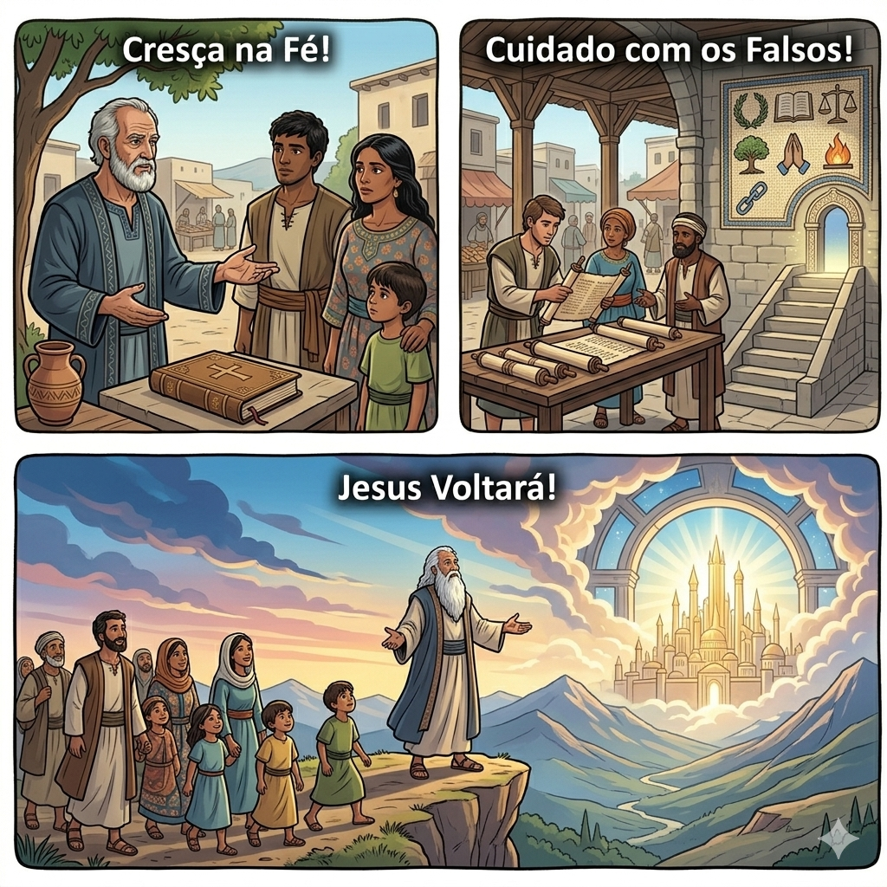
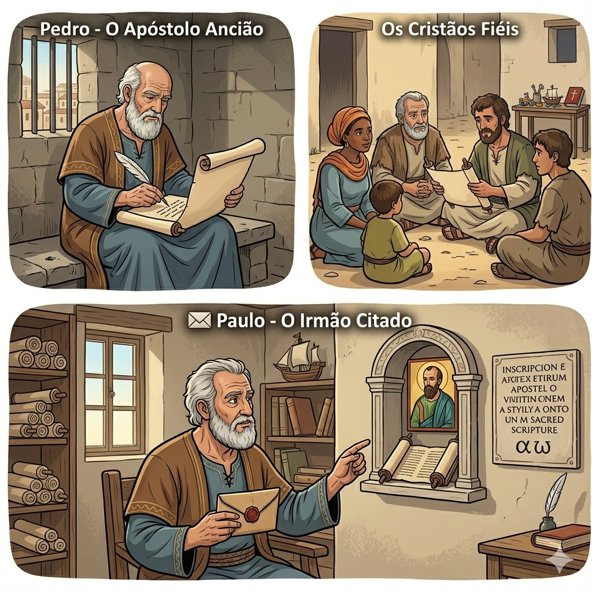
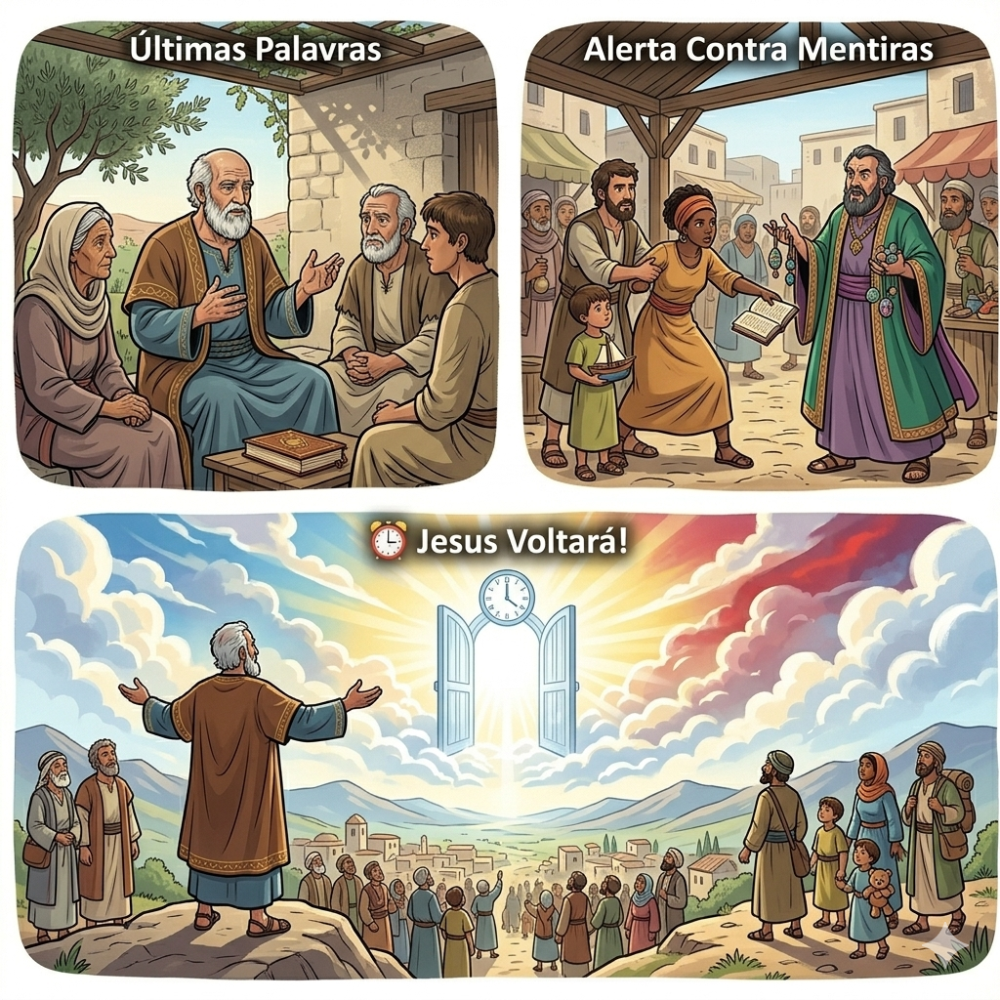
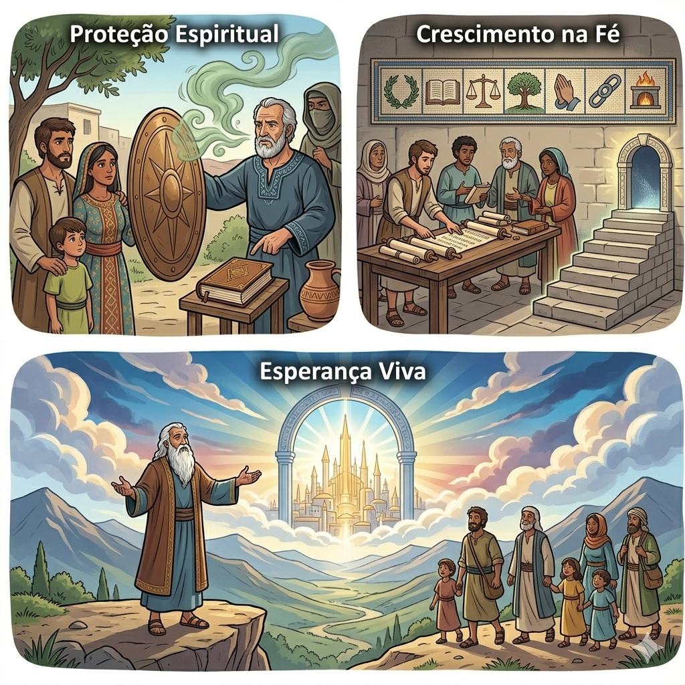
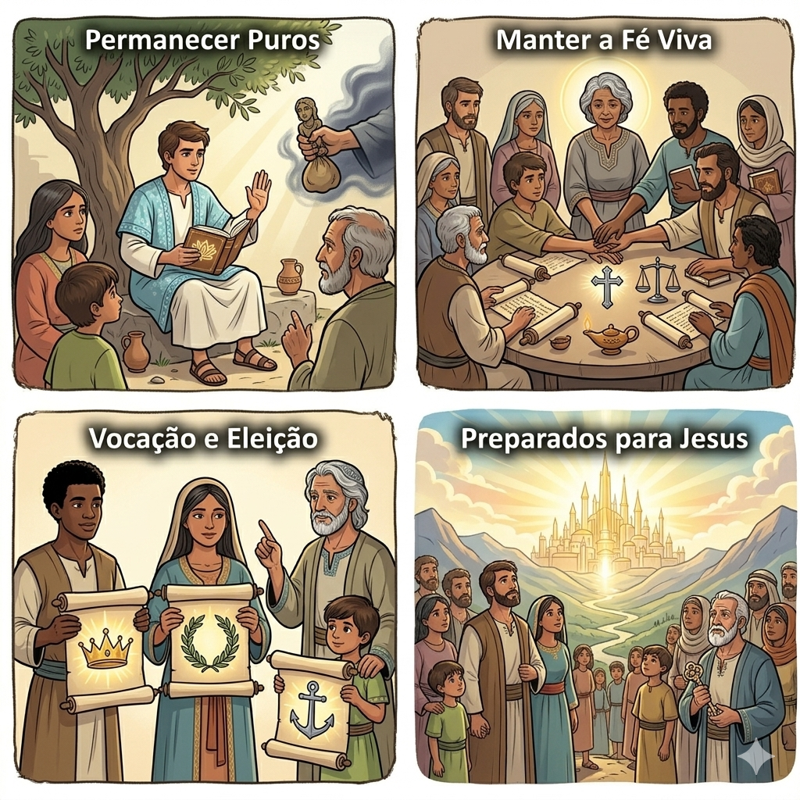
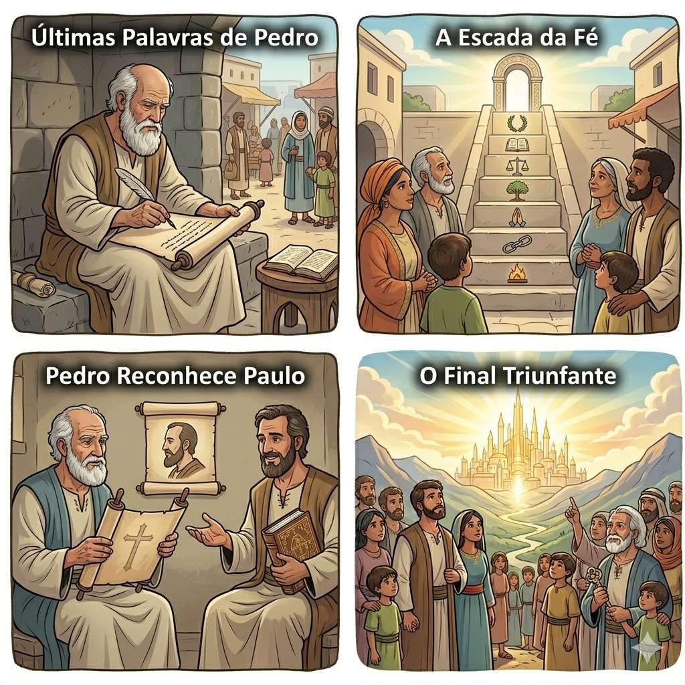

Últimas Palavras de Fé — Um Resumo Visual para Crianças
Pedro diz com voz serena:
"Cresçam no conhecimento pleno,
De Jesus, nossa luz amena,
Que nos guia com amor eterno!"
📖 2 Pedro 3:18
"Falsos mestres vão aparecer,
Com mentiras para enganar,
Mas a Palavra vai nos proteger,
Se em Jesus nos firmar!"
📖 2 Pedro 2:1-3
O Senhor não esqueceu da promessa,
Ele voltará com grande glória,
Vivamos com santa pureza,
Preparados para Sua história!
📖 2 Pedro 3:9-10

O mesmo pescador que Jesus chamou! Agora, velhinho e sábio, Pedro escreve suas últimas palavras para proteger os cristãos dos falsos ensinamentos.
Pessoas que amavam Jesus mas estavam sendo confundidas por falsos mestres. Pedro os ensina a ficarem firmes na verdade!
Pedro sabia que logo iria morrer, então escreveu esta carta especial para lembrar os cristãos de crescerem no conhecimento de Jesus!
Ele avisa sobre falsos mestres que tentariam enganar o povo de Deus com ensinamentos errados. "Fiquem atentos!", Pedro alerta!
Pedro garante: Jesus não esqueceu Sua promessa! Ele voltará para buscar Seu povo. Por isso, devemos viver com pureza e esperança!


Este livro nos ensina a identificar mentiras e a nos proteger de quem quer nos afastar de Jesus. É como um escudo de sabedoria!
Pedro nos motiva a nunca parar de aprender sobre Jesus. Quanto mais conhecemos a Palavra, mais fortes ficamos!
Nos lembra que Jesus voltará! Isso nos dá esperança para viver cada dia com alegria, pureza e amor.
Pedro quer que os cristãos vivam de forma pura e santa, sem se deixar contaminar por ensinamentos falsos ou pelo pecado.
Ajudar os cristãos a manterem a fé firme e verdadeira, mesmo quando pessoas tentarem enganá-los ou desanimá-los.
Garantir que todos estejam prontos para o dia em que Jesus voltar — vivendo com esperança e santidade!


Esta carta foi escrita pouco antes da morte de Pedro — são suas últimas palavras registradas na Bíblia!
Imagine: um avô sábio, sabendo que logo vai para o céu, deixando conselhos preciosos para seus netos amados. Cada palavra é um tesouro! 💎
"Cresçam na graça e no conhecimento de nosso Senhor e Salvador Jesus Cristo!"
- 2 Pedro 3:18
© 2025 - Trilho Kids
Desenvolvido com ❤️ para crianças